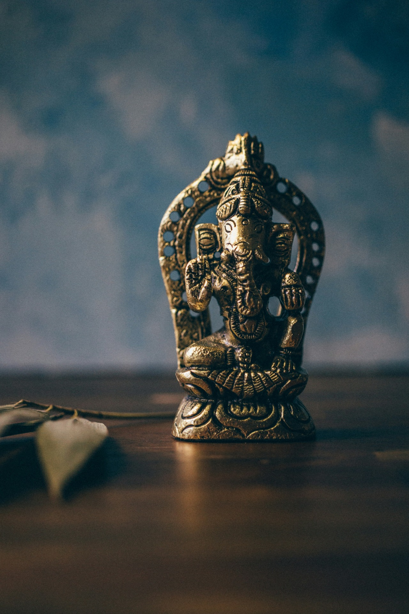

Bangunan yang dibangun pada kerajaan Hindu-Buddha biasanya berbentuk candi Setiap
bangunan candi yang memiliki corak Hindu-Buddha mempunyai fungsi yang
berbeda-beda.
Seni Rupa dan Ukir
Hindu&Buddha menyebabkan masyarakat Indonesia mengembangkan seni rupa menjadi lebih rumit dan sulit
Seni
Seni pertunjukan yang berkembang pada zaman Hindu-Buddha adalah seni wayang, seni tari, dan seni musik serta seni sastra dan aksara.
Sistem
Sistem memuat tentang sistem Sosial, pemerintahan, dan kalender
Seni Bangunan
Bangunan-bangunan
yang dibangun pada kerajaan Hindu-Buddha biasanya berbentuk candi Setiap
bangunan candi yang memiliki corak Hindu-Buddha mempunyai fungsi yang
berbeda-beda. Ada bangunan candi yang berfungsi untuk tempat ibadah, pemakaman,
dan ada yang sebagai tempat pemandian suci.
Setelah pengaruh Hindu-Buddha masuk, seni rupa di Indonesia berkembang pesat dengan masyarakat mulai menciptakan lukisan dan gambar motif kompleks yang dipengaruhi oleh budaya India. Pengaruh ini tidak hanya terbatas pada seni lukis, melainkan juga melibatkan seni ukir, patung, relief, dan makara. Seni rupa Hindu-Buddha terus berkembang seiring waktu, menambahkan beragam motif yang menjadi bagian kaya dari warisan seni dan budaya Indonesia.
Patung
Pada masa Hindu, patung-patung ditempatkan di candi dan dibagi menjadi trimatra dan setengah trimatra, mencerminkan makna dewa, manusia, dan binatang. Patung trimatra untuk menghormati raja-raja yang meninggal, sementara setengah trimatra umumnya terdapat di relief-relief candi. Pada masa Buddha, seni pahat batu lebih fokus pada patung Sang Buddha dengan posisi tangan tertentu. Perkembangan ini mencerminkan adaptasi masyarakat terhadap seni Hindu-Buddha, membentuk warisan seni pahat batu yang kaya dan bervariasi di Indonesia.
Relief
Relief merupakan unsur khas dalam candi-candi di Indonesia, menampilkan gambar-gambar timbul dengan makna mendalam. Relief Hindu mengisahkan cerita-cerita dari kitab suci dan sastra seperti Mahabharata dan Ramayana, contohnya terlihat di candi Prambanan. Sementara relief Buddha menceritakan kisah hidup Sang Buddha, Sidharta Gautama. Keseluruhan, relief-relief ini tidak hanya mendekorasi, tetapi juga menyampaikan nilai-nilai agama dan sejarah, memperkaya pengalaman budaya di Indonesia.
Makara
Makara, yang merupakan perwujudan binatang laut besar seperti hiu, buaya, dan lumba-lumba, sering dijadikan motif untuk mencegah sifat buruk masuk ke dalam candi dan menandakan tempat tersebut sebagai tempat yang sakral. Keberadaan motif Makara mencerminkan harmonisasi antara pengaruh seni India dan lokal Jawa dalam seni ukir candi, menciptakan warisan seni yang menggabungkan aspek keagamaan, keindahan, dan identitas kultural.
1. Pengaruh dalam seni pertunjukan Wayang:
Pengaruh Hindu-Buddha mengubah peran wayang dari fungsi religius dalam upacara pemujaan nenek moyang menjadi sarana penyampaian cerita epik India seperti Ramayana dan Mahabharata di konteks budaya Indonesia.
2. Pengaruh dalam Seni Tari: Sebelum Hindu-Buddha, seni tari sudah hadir dalam berbagai konteks. Kedatangan pengaruh Hindu-Buddha memengaruhi perkembangan seni tari, terutama terlihat dalam kelestarian seni tari dengan tema-tema Hindu-Buddha, seperti sendratari Ramayana di Candi Prambanan, mencerminkan peran agama dan mitologi dalam warisan budaya Indonesia.
3. Pengaruh dalam Seni Musik Gamelan: Gamelan, seni musik asli Indonesia, berkembang pesat dengan pengaruh Hindu-Buddha. Akarnya terlihat dalam relief candi dan karya sastra, menandai integrasi seni musik lokal dengan warisan Hindu-Buddha dalam warisan budaya Indonesia.
4. Pengaruh dalam Sastra dan Aksara Zaman Hindu-Buddha di Indonesia membawa munculnya aksara Pallawa, berkembang menjadi Hanacaraka. Sastra pada periode ini, seperti kitab Bharatayudha, dipengaruhi oleh epik India seperti Ramayana dan Mahabharata. Aksara dan bahasa Sanskerta mendorong perkembangan sastra, sementara adaptasi cerita menciptakan karya-karya unik dengan identitas lokal yang kuat.

Pengaruh pada sistem kepercayaan
zaman Hindu-Buddha
memiliki tiga unsur yang sangat penting. Pertama, Pada masa praaksara suatu
sistem kepercayaan bersumber dari kelompok masyarakat atau kepala suku yang
ditandai dengan adanya sebuah ritual.
Kedua, adanya
kepercayaan pada benda-benda pusaka yang dianggap mempunyai kekuatan magis
didalamnya.
Ketiga, pada zaman
Hindu-Buddha pemimpin agama selalu mendapatkan tempat terpandang di lingkungan
masyarakat.
Sistem ini mengelompokkan peran sosial berdasarkan derajat, dengan Brahmana sebagai penasihat raja, Kesatria sebagai penyelenggara pemerintahan, Waisya sebagai masyarakat biasa, dan Sudra sebagai tingkatan paling rendah.
Sebelum Hindu-Buddha, pemerintahan didasarkan pada kepala suku yang dipilih berdasarkan pengaruhnya. Setelah Hindu-Buddha, muncul sistem kerajaan dengan raja sebagai pemimpin yang dapat mewariskan tahtanya.
Masuknya Hindu-Buddha membawa perhitungan waktu berdasarkan penanggalan tahun Saka. Kalender ini memiliki 365 hari, dengan selisih 78 tahun antara tahun Saka dan Masehi.
Masuknya Hindu-Buddha memberikan pengaruh bagi kehidupan masyarakat Indonesia dan mencampurkan budaya Hindu Buddha dengan budaya Indonesia. Meskipun memberikan pengaruh terhadap kehidupan masyarakat dan budaya Indonesia, tetapi tetap tidak mengurangi keaslian atau nilai-nilai dari masyarakat Indonesia dan budaya Indonesia. Adanya akulturasi budaya ini menunjukkan bahwa masyarakat Indonesia terbuka akan budaya baru.